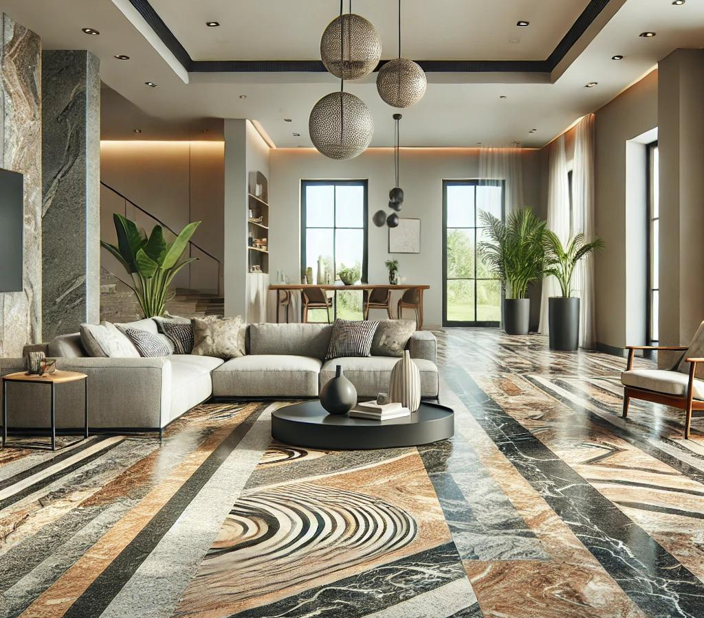
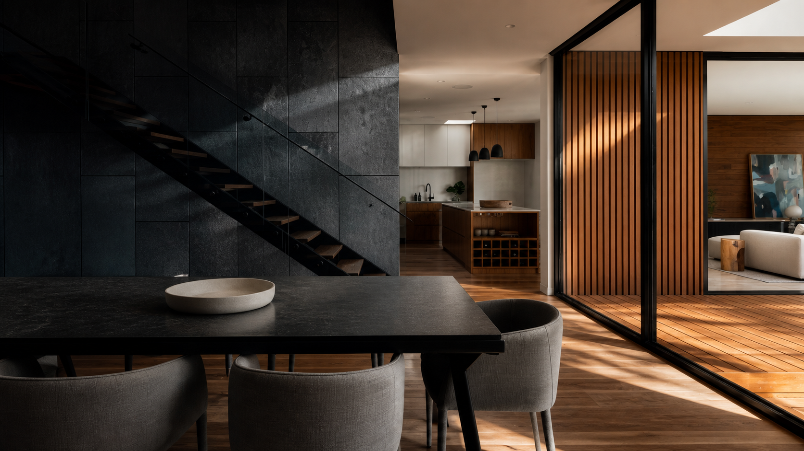
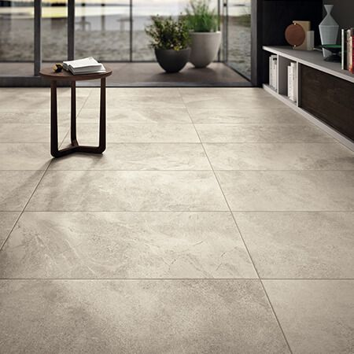
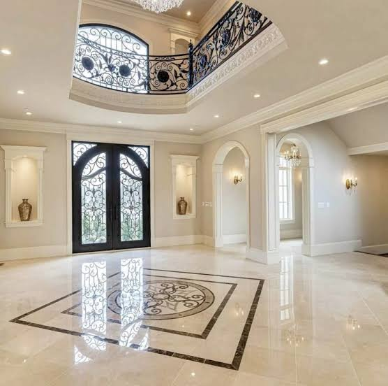
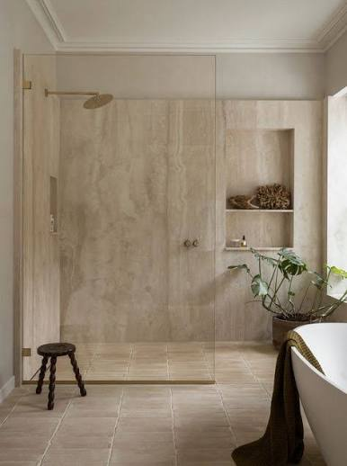

Stone · Tile · Surface
Quality materials
for beautiful spaces.
Granite, marble, ceramic and vitrified tiles, sanitaryware and thoughtfully chosen finishes for homes, commercial spaces and projects.
01Wide Product Range
02Quality Focused
03Timely Delivery
04Customer Support
About us
About Kriti Granite Industries
Quality surfaces for the spaces that matter most.
Kriti Granite Industries is a supplier of quality surface and interior products serving customers in Birgunj, Nepal. Our product range includes marble, granite, tiles, Kota stone, stone chips, sanitaryware, marble handicrafts and related products.
We aim to provide customers with a dependable selection of materials for residential, commercial and architectural requirements. From flooring and wall finishes to sanitaryware and decorative stone products, we focus on offering practical choices for different spaces and needs.
Talk to our team →Our collection
Explore by material.
Practical, beautiful surfaces curated for everyday living and ambitious projects.



Endless ways to make it yours
For every room
Materials that hold their beauty, day after day.
Bring a cohesive finish to living areas, kitchens, bathrooms and places of prayer with surfaces chosen for their character and performance.
Residential interiorsCommercial spacesProject requirements
Start an enquiry →“Our goal is to provide quality products, reliable service, and build lasting relationships with our customers.”
Let’s talk surfaces
Bring your next
space to life.
Tell us what you are planning and we’ll help you find the right materials.